13 ML models
13.0.1 Binary model with negative growth, yes:no
Code
# http://uc-r.github.io/gbm_regression
cd1 <- tar_read(cd1_target)
dML <- cd1 |>
filter(speciesGG == "Brook trout", !is.na(grWeight)) |>
mutate(age = year - cohort) |>
dplyr::select(riverGG, seasonGG, observedWeight, cohort, age, meanTemperature, meanFlowByRiver, negGrowth)
# variable names
features <- setdiff(names(dML), "negGrowth")
# Create the treatment plan from the training data
treatplan <- vtreat::designTreatmentsZ(dML, features, verbose = FALSE)
# Get the "clean" variable names from the scoreFrame
new_vars <- treatplan %>%
magrittr::use_series(scoreFrame) %>%
dplyr::filter(code %in% c("clean", "lev")) %>%
magrittr::use_series(varName)
# Prepare the training data
features_train <- vtreat::prepare(treatplan, dML, varRestriction = new_vars) %>% as.matrix()
response_train <- dML$negGrowth
# Prepare the test data
features_test <- vtreat::prepare(treatplan, dML, varRestriction = new_vars) %>% as.matrix()
response_test <- dML$negGrowth
# dimensions of one-hot encoded data
dim(features_train)[1] 10089 13Code
dim(features_test)[1] 10089 1313.0.1.1 Run first model
Code
# reproducibility
set.seed(123)
xgb.fit1 <- xgb.cv(
data = features_train,
label = response_train,
nrounds = 10000,
nfold = 5,
objective = "binary:logistic", #"reg:linear", # for regression models
verbose = 0, # silent,
early_stopping_rounds = 15 # stop if no improvement for 10 consecutive trees
)
# get number of trees that minimize error
xgb.fit1$evaluation_log %>%
dplyr::summarise(
ntrees.train = which(train_logloss_mean == min(train_logloss_mean))[1],
logloss.train = min(train_logloss_mean),
ntrees.test = which(test_logloss_mean == min(test_logloss_mean))[1],
logloss.test = min(test_logloss_mean),
) ntrees.train logloss.train ntrees.test logloss.test
1 44 0.1802105 29 0.2506292Code
# plot error vs number trees
ggplot(xgb.fit1$evaluation_log) +
geom_line(aes(iter, train_logloss_mean), color = "red") +
geom_line(aes(iter, test_logloss_mean), color = "blue")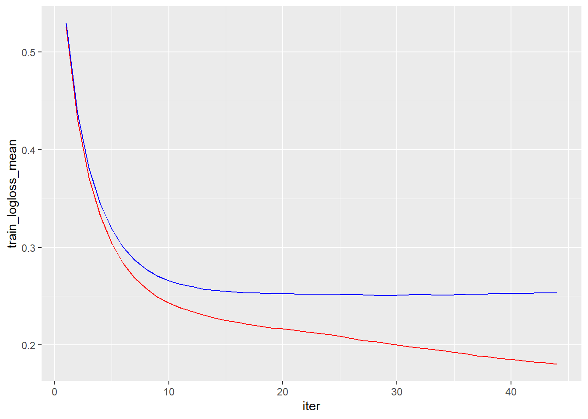
13.0.1.2 Add early stopping
Code
## tune the model
# create parameter list
params <- list(
eta = .1,
max_depth = 5,
min_child_weight = 2,
subsample = .8,
colsample_bytree = .9
)
xgb.fit2 <- xgb.cv(
params = params,
data = features_train,
label = response_train,
nrounds = 20000,
nfold = 5,
objective = "binary:logistic", #"reg:linear", # for regression models
verbose = 0, # silent,
early_stopping_rounds = 10 # stop if no improvement for 10 consecutive trees
)
xgb.fit2$evaluation_log %>%
dplyr::summarise(
ntrees.train = which(train_logloss_mean == min(train_logloss_mean))[1],
logloss.train = min(train_logloss_mean),
ntrees.test = which(test_logloss_mean == min(test_logloss_mean))[1],
logloss.test = min(test_logloss_mean),
) ntrees.train logloss.train ntrees.test logloss.test
1 128 0.201228 118 0.247713Code
# plot error vs number trees
ggplot(xgb.fit2$evaluation_log) +
geom_line(aes(iter, train_logloss_mean), color = "red") +
geom_line(aes(iter, test_logloss_mean), color = "blue")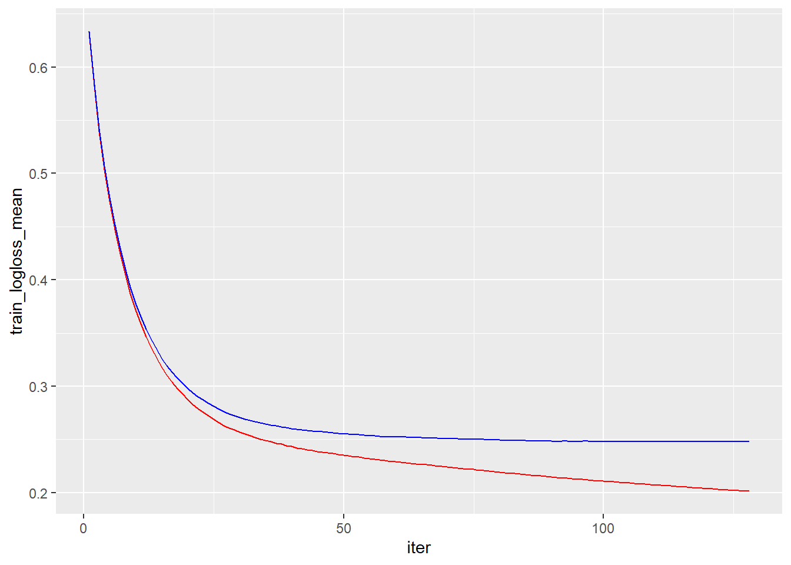
13.0.1.3 Hyperparameter search grid
Code
# create hyperparameter grid
hyper_grid <- expand.grid(
eta = c(.01, .05, .1, .3),
max_depth = c(1, 3, 5, 7),
min_child_weight = c(1, 3, 5, 7),
subsample = c(.65, .8, 1),
colsample_bytree = c(.8, .9, 1),
optimal_trees = 0, # a place to dump results
min_RMSE = 0 # a place to dump results
)
nrow(hyper_grid)[1] 576Code
# reproducibility
set.seed(123)
#
# # grid search
# for(i in 1:nrow(hyper_grid)) {
# print(i)
# # create parameter list
# params <- list(
# eta = hyper_grid$eta[i],
# max_depth = hyper_grid$max_depth[i],
# min_child_weight = hyper_grid$min_child_weight[i],
# subsample = hyper_grid$subsample[i],
# colsample_bytree = hyper_grid$colsample_bytree[i]
# )
#
#
# # train model
# xgb.tune <- xgb.cv(
# params = params,
# data = features_train,
# label = response_train,
# nrounds = 5000,
# nfold = 5,
# objective = "binary:logistic", #"reg:linear", # for regression models
# verbose = 0, # silent,
# early_stopping_rounds = 20 # stop if no improvement for 10 consecutive trees
# )
#
# # add min training error and trees to grid
# hyper_grid$optimal_trees[i] <- which.min(xgb.tune$evaluation_log$test_logloss_mean)
# hyper_grid$min_RMSE[i] <- min(xgb.tune$evaluation_log$test_logloss_mean)
# }
#
# hyper_grid %>%
# dplyr::arrange(min_RMSE) %>%
# head(15)eta max_depth min_child_weight subsample colsample_bytree optimal_trees min_RMSE1 0.01 5 1 0.80 0.8 1082 0.2464962 2 0.01 5 1 0.65 0.8 1042 0.2466260 3 0.01 5 1 0.80 0.9 1115 0.2467519 4 0.01 7 1 0.80 0.8 676 0.2467640 5 0.01 7 1 0.65 0.8 671 0.2468416 6 0.05 5 1 0.65 0.9 217 0.2470321 7 0.01 7 3 0.80 0.8 676 0.2470520 8 0.01 5 3 0.80 0.8 1115 0.2470706 9 0.01 5 3 0.80 0.9 1089 0.2470969 10 0.10 5 3 1.00 0.9 158 0.2471294 11 0.05 7 3 0.80 1.0 139 0.2471420 12 0.01 5 1 0.65 0.9 960 0.2471568 13 0.01 5 1 0.80 1.0 1023 0.2471608 14 0.01 7 3 0.65 0.8 671 0.2472037 15 0.10 5 1 0.80 0.8 95 0.2472090
13.0.1.4 Fit the top model
Code
# parameter list - from the top model of the grid search above
params <- list(
eta = 0.01,
max_depth = 5,
min_child_weight = 1,
subsample = 0.8,
colsample_bytree = 0.8
)
# train final model
xgb.fit.final <- xgboost(
params = params,
data = features_train,
label = response_train,
nrounds = 1082,
objective = "binary:logistic",
verbose = 0,
early_stopping_rounds = 25 # stop if no improvement for 10 consecutive trees
)13.0.1.5 Variable importance plot
Code
# create importance matrix
importance_matrix <- xgb.importance(model = xgb.fit.final)
# variable importance plot
xgb.plot.importance(importance_matrix, top_n = 10, measure = "Gain")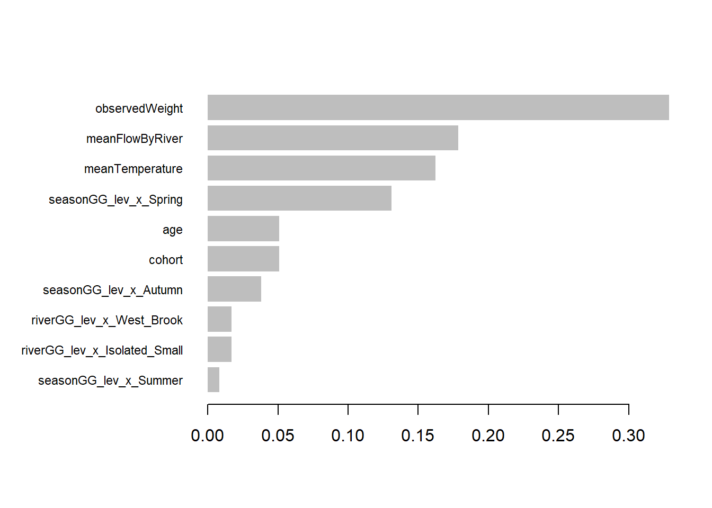
13.0.1.6 Partial dependence plots
Code
pW <- xgb.fit.final %>%
pdp::partial(pred.var = "observedWeight", n.trees = 1082, grid.resolution = 100, train = features_train) %>%
autoplot(rug = TRUE, train = features_train)
#scale_y_discrete() +
#ggtitle("PDP")
pFlow <- xgb.fit.final %>%
pdp::partial(pred.var = "meanFlowByRiver", n.trees = 1082, grid.resolution = 100, train = features_train) %>%
autoplot(rug = TRUE, train = features_train)
pTemp <- xgb.fit.final %>%
pdp::partial(pred.var = "meanTemperature", n.trees = 1082, grid.resolution = 100, train = features_train) %>%
autoplot(rug = TRUE, train = features_train)
pAge <- xgb.fit.final %>%
pdp::partial(pred.var = "age", n.trees = 1082, grid.resolution = 100, train = features_train) %>%
autoplot(rug = TRUE, train = features_train)
pCohort <- xgb.fit.final %>%
pdp::partial(pred.var = "cohort", n.trees = 1082, grid.resolution = 100, train = features_train) %>%
autoplot(rug = TRUE, train = features_train)
gridExtra::grid.arrange(pW, pFlow, pTemp, pAge, pCohort, nrow = 3)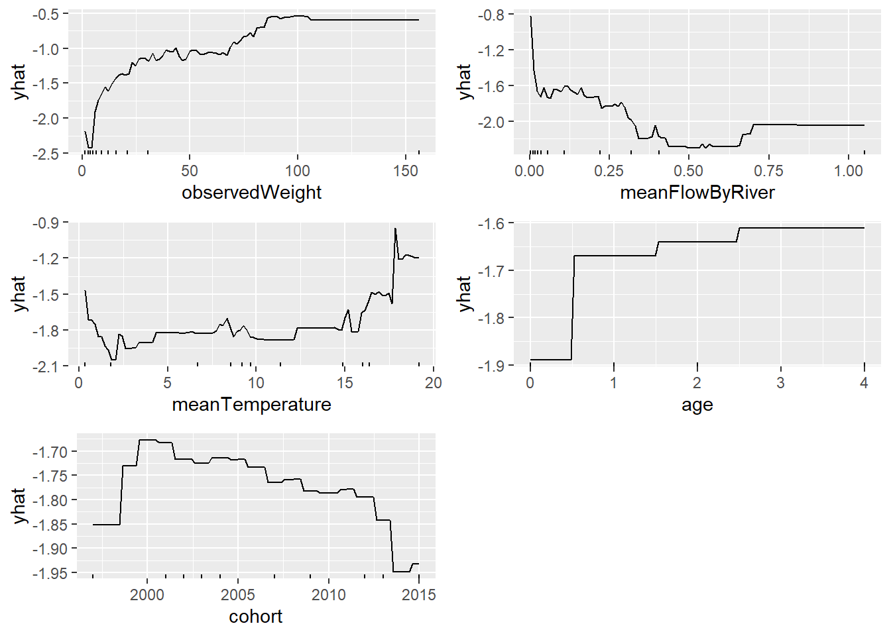
13.0.1.7 Lime
Code
# get a few observations to perform local interpretation on
local_obs <- dML[1:3, ]
# one-hot encode the local observations to be assessed.
local_obs_onehot <- vtreat::prepare(treatplan, local_obs, varRestriction = new_vars)
# apply LIME
explainer <- lime(data.frame(features_train), xgb.fit.final, quantile_bins = FALSE)
explanation <- lime::explain(local_obs_onehot, explainer, n_features = 5, n_labels = 2)
plot_features(explanation)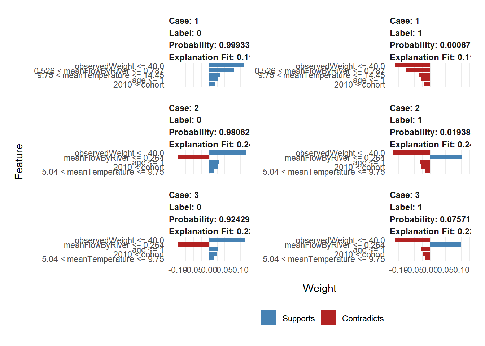
13.0.2 Growth model, continuous growth
can we add season, river interactions? or do separate analyses?
Code
dML_W <- tar_read(dML_W_target)
treatplan_W <- tar_read(treatplan_W_target)
features_train_W <- tar_read(features_train_W_target)
new_vars_W <- tar_read(new_vars_W_target)
# dimensions of one-hot encoded data
features_train_W <- tar_read(features_train_W_target)
features_test_W <- tar_read(features_test_W_target)
response_train_W <- tar_read(response_train_W_target)
response_test_W <- tar_read(response_test_W_target)
# run from targets
hyper_grid_W <- tar_read(hyper_grid_W_target)
topModel_W <- tar_read(topModel_W_target)13.0.2.1 Run first model
Code
# reproducibility
set.seed(1234)
xgb.fit1_W <- xgb.cv(
data = features_train_W,
label = response_train_W,
nrounds = 500,
nfold = 5,
objective = "reg:squarederror", # for regression models
verbose = 0, # silent,
early_stopping_rounds = 10
)
# get number of trees that minimize error
xgb.fit1_W$evaluation_log %>%
dplyr::summarise(
ntrees.train = which(train_rmse_mean == min(train_rmse_mean))[1],
rmse.train = min(train_rmse_mean),
ntrees.test = which(test_rmse_mean == min(test_rmse_mean))[1],
rmse.test = min(test_rmse_mean),
) ntrees.train rmse.train ntrees.test rmse.test
1 67 0.001534427 65 0.001884902Code
# plot error vs number trees
ggplot(xgb.fit1_W$evaluation_log) +
geom_line(aes(iter, train_rmse_mean), color = "red") +
geom_line(aes(iter, test_rmse_mean), color = "blue")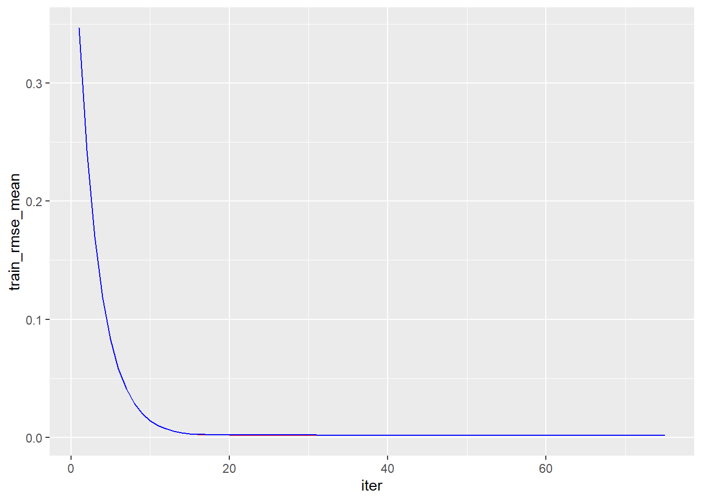
13.0.2.2 Hyperparameter search grid
Code
# create hyperparameter grid
# original grid - using a smaller one in targets
hyper_grid_W0 <- expand.grid(
eta = c(.01, .05, .1, .3),
max_depth = c(1, 3, 5, 7),
min_child_weight = c(1, 3, 5, 7),
subsample = c(.65, .8, 1),
colsample_bytree = c(.8, .9, 1),
optimal_trees = 0, # a place to dump results
min_RMSE = 0 # a place to dump results
)
nrow(hyper_grid_W0)[1] 576Original run using hyper_grid_W0 eta max_depth min_child_weight subsample colsample_bytree optimal_trees min_RMSE 1 0.01 7 5 0.65 0.8 1376 0.001847600 2 0.05 7 3 0.80 0.9 292 0.001848465 3 0.01 7 7 0.80 0.9 1382 0.001849086 4 0.01 5 1 0.80 0.8 2399 0.001849250 5 0.05 7 3 0.80 0.8 281 0.001849258 6 0.01 5 3 0.65 0.8 2147 0.001849905 7 0.05 5 1 0.65 0.8 459 0.001849931 8 0.01 5 5 0.80 0.9 2296 0.001850049 9 0.01 7 5 0.65 0.9 1402 0.001850246 10 0.01 7 7 0.65 0.8 1382 0.001850544 11 0.01 7 3 0.65 0.8 1384 0.001850704 12 0.05 3 3 0.80 0.8 1509 0.001850763 13 0.01 7 7 0.80 0.8 1453 0.001850975 14 0.01 7 1 0.80 1.0 1281 0.001851069 15 0.01 7 1 0.80 0.8 1473 0.001851078
13.0.2.3 Fit the top model
Code
xgb.fit.final_W <- tar_read(xgb.fit.final_W_target)13.0.2.4 Variable importance plot
Code
importance_matrix_W <- tar_read(importance_matrix_W_target)
# variable importance plot
xgb.plot.importance(importance_matrix_W, top_n = 10, measure = "Gain")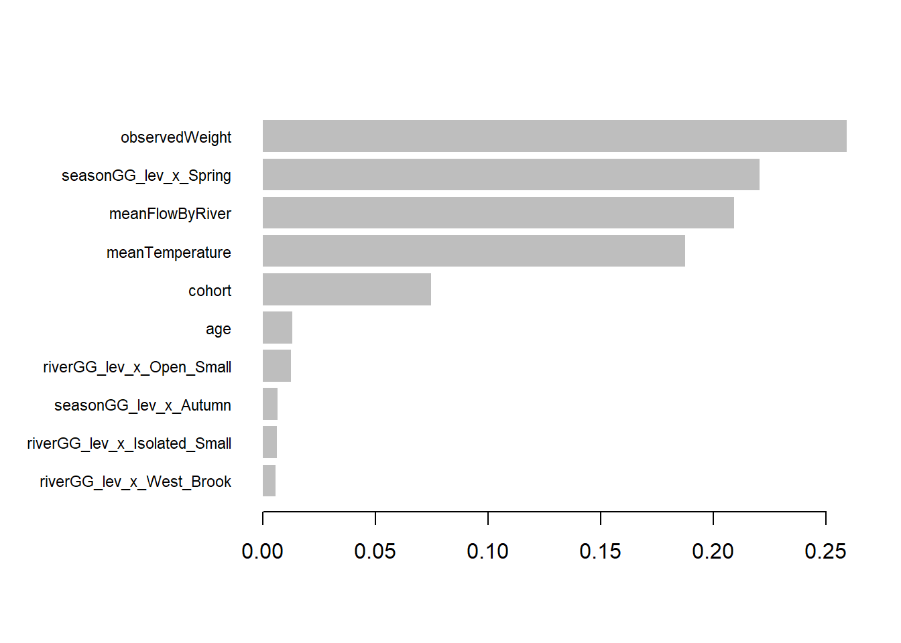
13.0.2.5 Partial dependence plots
Code
pW_W <- xgb.fit.final_W %>%
pdp::partial(pred.var = "observedWeight", n.trees = 1082, grid.resolution = 100, train = features_train_W) %>%
autoplot(rug = TRUE, train = features_train_W)
#scale_y_discrete() +
#ggtitle("PDP")
pFlow_W <- xgb.fit.final_W %>%
pdp::partial(pred.var = "meanFlowByRiver", n.trees = 1082, grid.resolution = 100, train = features_train_W) %>%
autoplot(rug = TRUE, train = features_train_W)
pTemp_W <- xgb.fit.final_W %>%
pdp::partial(pred.var = "meanTemperature", n.trees = 1082, grid.resolution = 100, train = features_train_W) %>%
autoplot(rug = TRUE, train = features_train_W)
pAge_W <- xgb.fit.final_W %>%
pdp::partial(pred.var = "age", n.trees = 1082, grid.resolution = 100, train = features_train_W) %>%
autoplot(rug = TRUE, train = features_train_W)
pCohort_W <- xgb.fit.final_W %>%
pdp::partial(pred.var = "cohort", n.trees = 1082, grid.resolution = 100, train = features_train_W) %>%
autoplot(rug = TRUE, train = features_train_W)
gridExtra::grid.arrange(pW_W,pFlow_W, pTemp_W, pAge_W, pCohort_W, nrow = 3)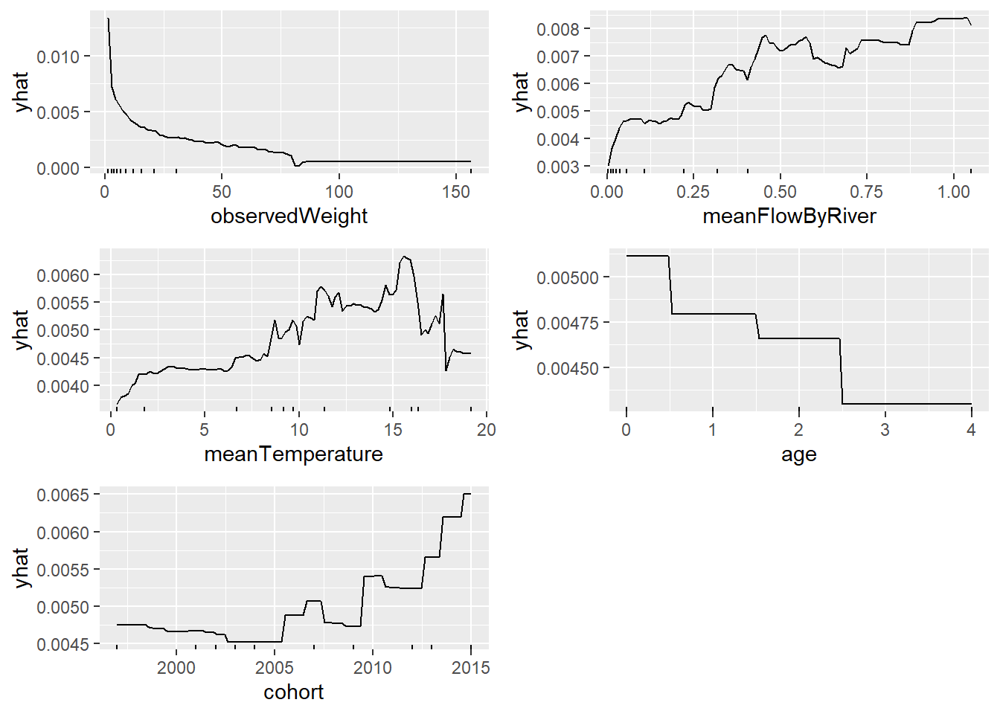
13.0.2.6 Lime
Code
# get a few observations to perform local interpretation on
local_obs_W <- dML_W[1:3, ]
# one-hot encode the local observations to be assessed.
local_obs_onehot_W <- vtreat::prepare(treatplan_W, local_obs_W, varRestriction = new_vars_W)
# apply LIME
explainer_W <- lime(data.frame(features_train_W), xgb.fit.final_W, quantile_bins = FALSE)
explanation_W <- lime::explain(local_obs_onehot_W, explainer_W, n_features = 5, n_labels = 2)
plot_features(explanation_W)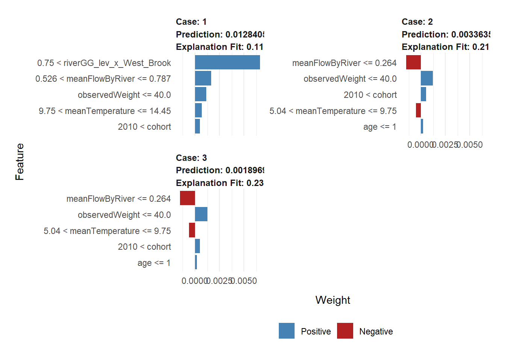
13.0.2.7 Predict
Code
#Using raw data inputs
pred_W <- predict(xgb.fit.final_W, features_test_W)
#residuals_W <- response_test_W - pred_W
#RMSE_W = sqrt(mean(residuals_W^2))
caret::RMSE(pred_W, response_test_W)[1] 0.001588266Code
caret::R2(pred_W, response_test_W)[1] 0.9195976Code
obsPred_W <- bind_cols(obs = response_test_W, pred = pred_W, features_test_W)
ggplot(obsPred_W, aes(obs, pred)) +
geom_point(alpha = 0.2) +
labs(x = "Observed growth rate", y = "Predicted growth rate") +
geom_smooth(method = "lm", se = FALSE)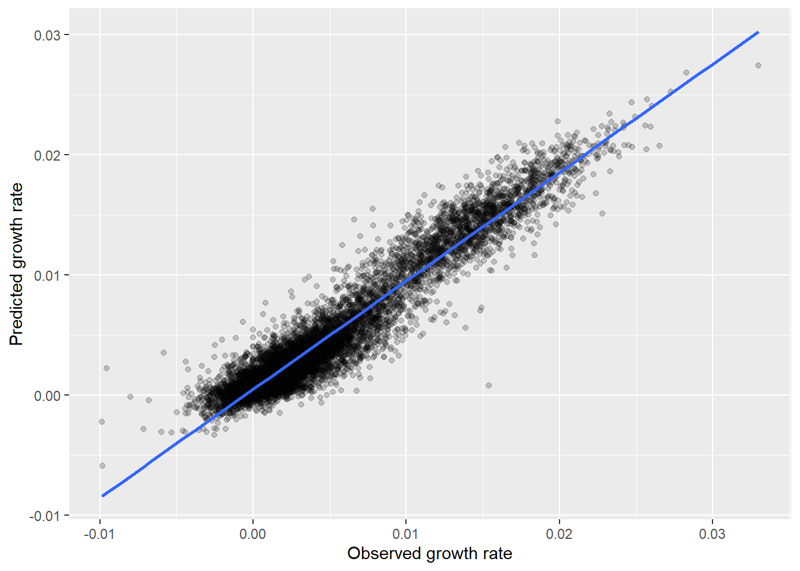
Code
ggplot(obsPred_W, aes(obs, pred)) +
geom_point(alpha = 0.2) +
labs(x = "Observed growth rate", y = "Predicted growth rate") +
geom_smooth(method = "lm", se = FALSE) +
facet_wrap(~cohort)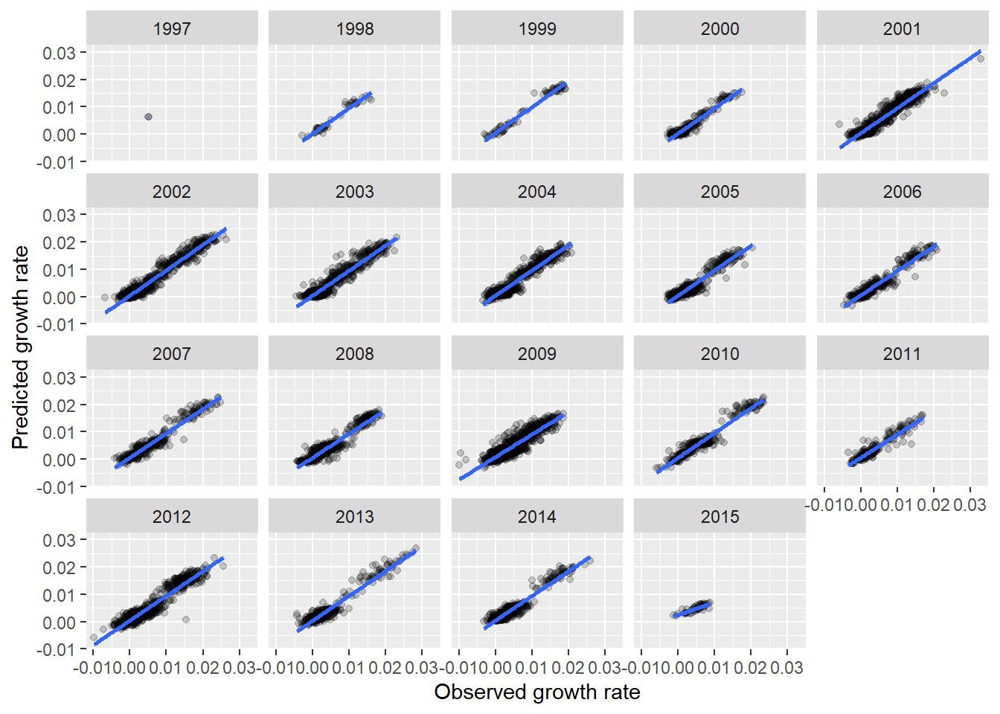
Code
nSeq <- 5
predInd_W <- expand.grid(
observedWeight = seq(min(features_test_W[,"observedWeight"]), max(features_test_W[,"observedWeight"]), length.out = nSeq),
cohort = seq(min(features_test_W[,"cohort"]), max(features_test_W[,"cohort"]), length.out = nSeq),
age = seq(min(features_test_W[,"age"]), max(features_test_W[,"age"]), length.out = nSeq),
meanTemperature = seq(min(features_test_W[,"meanTemperature"]), max(features_test_W[,"meanTemperature"]), length.out = nSeq * 3),
meanFlowByRiver = seq(min(features_test_W[,"meanFlowByRiver"]), max(features_test_W[,"meanFlowByRiver"]), length.out = nSeq * 3),
riverGG_lev_x_Isolated_Small = 0,
riverGG_lev_x_Open_Large = 0,
riverGG_lev_x_Open_Small = 0,
riverGG_lev_x_West_Brook = c(0, 1),
seasonGG_lev_x_Autumn = 0,
seasonGG_lev_x_Spring = c(0, 1),
seasonGG_lev_x_Summer = 0,
seasonGG_lev_x_Winter = 0
) |>
as.matrix()
pred_W_grid <- predict(xgb.fit.final_W, predInd_W)
gridPred_W <- bind_cols(predInd_W, pred = pred_W_grid)
ggplot(gridPred_W |>
filter(), aes(meanFlowByRiver, pred, color = factor(observedWeight))) +
geom_point(alpha = 0.2) +
labs(x = "Stream flow", y = "Predicted growth rate") +
geom_smooth(se = FALSE) +
facet_grid(riverGG_lev_x_West_Brook~seasonGG_lev_x_Spring)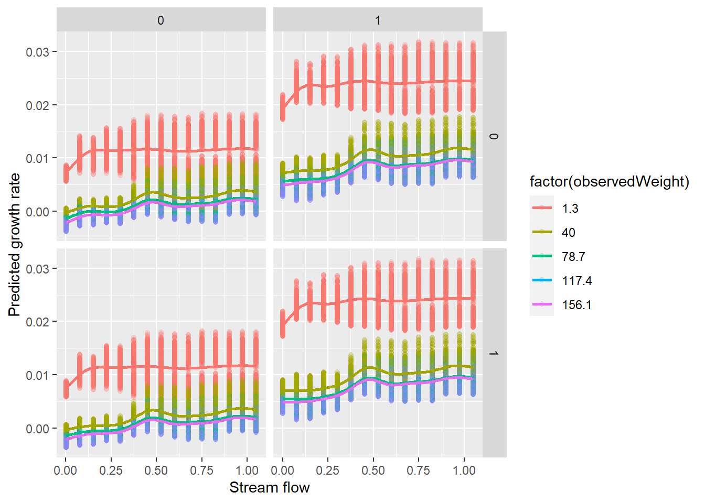